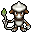
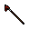
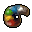
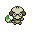

Pokédex / #235

Smeargle #235
Normal
Once it becomes an adult, it has a tendency to let its comrades plant footprints on its back.
Generation 2 · Johto

Stats
| Attack | 20 | |
|---|---|---|
| Defense | 35 | |
| Sp. Atk | 20 | |
| Sp. Def | 45 |
In the wild
| Wild level | 80–90 |
|---|---|
| HP | 55 |
| Experience | 12 |
| Egg groups | Field |
Evolution
- Does not evolve.
Moves
| Level | Move | Type | Category | Power | Energy | Cooldown | Effect | |
|---|---|---|---|---|---|---|---|---|
| 1 | Tackle | Normal | Physical | 15 | 15 | 1s | Tackle is one of the most common and basic moves a Pokemon learns. It deals damage with no additional effects. | |
| 1 | Sketch | Normal | Status | – | 100 | 3s | Sketch allows the user to copy the opponent's last move permanently, therefore replacing Sketch. | |
| 10 | Sketch | Normal | Status | – | 100 | 3s | Sketch allows the user to copy the opponent's last move permanently, therefore replacing Sketch. | |
| 20 | Sketch | Normal | Status | – | 100 | 3s | Sketch allows the user to copy the opponent's last move permanently, therefore replacing Sketch. | |
| 30 | Sketch | Normal | Status | – | 100 | 3s | Sketch allows the user to copy the opponent's last move permanently, therefore replacing Sketch. | |
| 40 | Sketch | Normal | Status | – | 100 | 3s | Sketch allows the user to copy the opponent's last move permanently, therefore replacing Sketch. | |
| 50 | Sketch | Normal | Status | – | 100 | 3s | Sketch allows the user to copy the opponent's last move permanently, therefore replacing Sketch. | |
| 60 | Sketch | Normal | Status | – | 100 | 3s | Sketch allows the user to copy the opponent's last move permanently, therefore replacing Sketch. | |
| 70 | Sketch | Normal | Status | – | 100 | 3s | Sketch allows the user to copy the opponent's last move permanently, therefore replacing Sketch. | |
| 80 | Sketch | Normal | Status | – | 100 | 3s | Sketch allows the user to copy the opponent's last move permanently, therefore replacing Sketch. | |
| 90 | Sketch | Normal | Status | – | 100 | 3s | Sketch allows the user to copy the opponent's last move permanently, therefore replacing Sketch. |
Field abilities
None
Special abilities
Own TempoTechnician
Egg moves
None
Technical machines
None
Drops
| Item | Amount | Chance | |
|---|---|---|---|
| artist brush | 1 | 17.5% | |
 | artist brush with ink | 1 | 4.38% |
| artist canvas | 1 | 2.92% | |
 | artist palette | 1 | 1.75% |
 | smeargle doll | 1 | 0.1% |
| Love Plate | 1 | 0.05% | |
| held silk scarf | 1 | 0.01% |